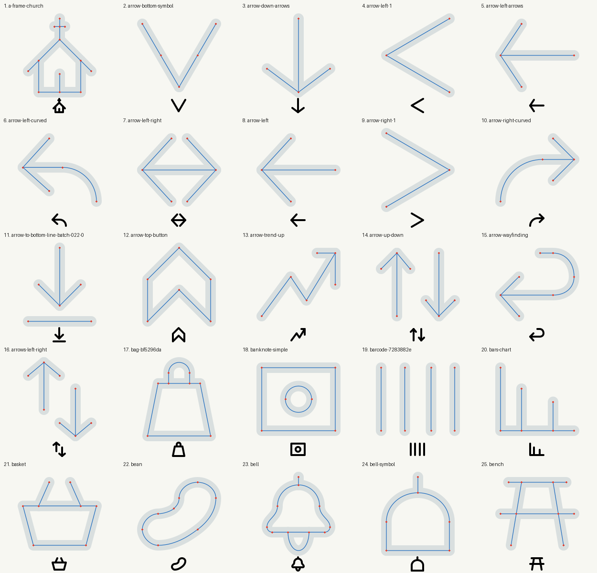
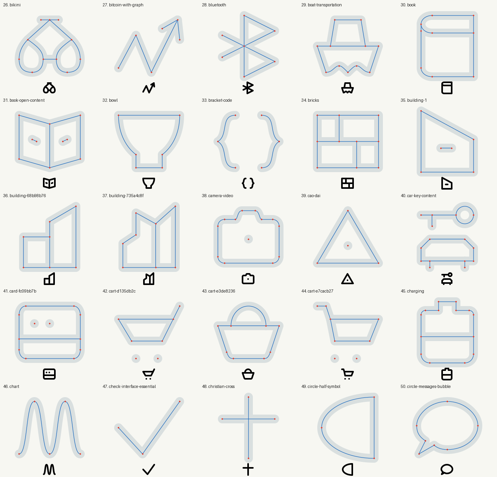

All 50 were inspected as centerlines and native artwork. Seven further repairs corrected straight-run bends and curve tangent discontinuities. Deliberate corners were retained. Full artwork QA passes for all 50.
Blue: centerlines. Red: segment endpoints. Gray: visible ink.

